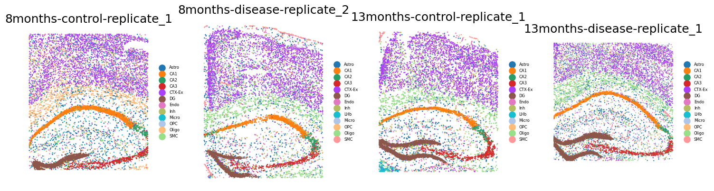
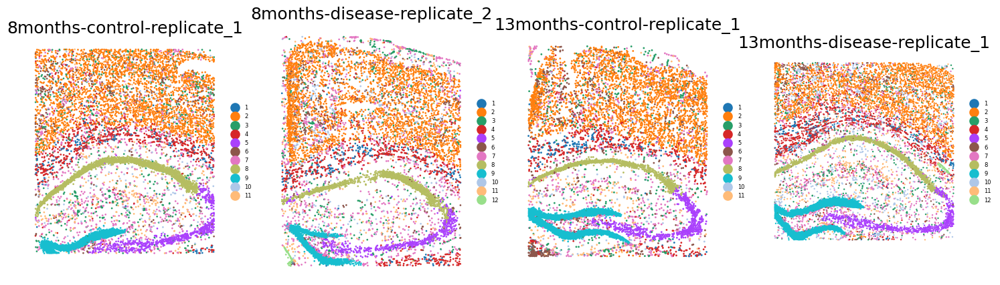

Tutorial 7: Integrating Alzheimer’s mouse brain data
This tutorial demonstrates SpaTemporal’s capabilities in investigating the progression of Alzheimer’s disease. The raw data can be downloaded from:https://singlecell.broadinstitute.org/single_cell/study/SCP1375/integrative-in-situ-mapping-of-single-cell-transcriptional-states-and-tissue-histopathology-in-an-alzheimer-disease-model#study-download., or from our hosted repository on Zenodo at https://zenodo.org/records/19591185.
Preparation
[1]:
import os
import torch
import numpy as np
import pandas as pd
import scanpy as sc
import matplotlib.pyplot as plt
import seaborn as sns
import warnings
warnings.filterwarnings('ignore')
from pathlib import Path
from tqdm import tqdm
from graph_3D import *
from train import *
from utils import *
os.environ['R_HOME'] = "/root/miniconda3/envs/njy1/lib/R"
os.environ['R_USER'] = "/root/miniconda3/envs/PyG/lib/python3.8/site-packages/rpy2"
[2]:
fix_seed(42)
Load Data
[3]:
data_root = Path('../Data/Alzheimer/')
proj_list = [
'8months-control-replicate_1', '8months-disease-replicate_2', '13months-control-replicate_1', '13months-disease-replicate_1',
]
Construction of the Spatiotemporal Neighbor Graph
[4]:
adata, graph_dict = spatiotemporal_graph_(proj_list, k_cutoff=12, scale_factor=1, mode="KNN", rad_cutoff=0.15, data_root=data_root, dataset='Alzheimer')
Reading data.
25%|██▌ | 1/4 [00:00<00:00, 8.07it/s]
adata 8months-control-replicate_1 shape: (8506, 2765)
adata 8months-disease-replicate_2 shape: (8202, 2765)
50%|█████ | 2/4 [00:01<00:01, 1.49it/s]
adata 13months-control-replicate_1 shape: (8034, 2765)
75%|███████▌ | 3/4 [00:02<00:01, 1.07s/it]
adata 13months-disease-replicate_1 shape: (10372, 2765)
100%|██████████| 4/4 [00:04<00:00, 1.23s/it]
Finished reading data.
Data Preprocessing
[8]:
adata.layers['count'] = adata.X
sc.pp.filter_genes(adata, min_cells=50)
sc.pp.filter_genes(adata, min_counts=10)
sc.pp.normalize_total(adata, target_sum=1e6)
sc.pp.highly_variable_genes(adata, flavor="seurat_v3", layer='count', n_top_genes=2000)
adata = adata[:, adata.var['highly_variable'] == True]
sc.pp.scale(adata)
from sklearn.decomposition import PCA # sklearn PCA is used because PCA in scanpy is not stable.
adata_X = PCA(n_components=200, random_state=42).fit_transform(adata.X)
adata.obsm['X_pca'] = adata_X
Running SpaTemporal
[10]:
my_net = Train(adata, graph_dict, rec_weight=1, self_weight=50, tri_weight=1, pre_epochs=500, epochs=500, mask_rate=0.2, lr=5e-4, decay=1e-4, mask_mode='token', device='cuda:0')
print_model_parameters(my_net)
my_net.train_final_model(num_cluster=12, method='kmeans', margin=1) ###method=['mclust', 'kmeans']
get_gpu_memory()
## 📋 Model Parameters Information ##
* model.enc_mask_token | Shape: [1, 200]
* model.encoder.encoder_L1.0.weight | Shape: [64, 200]
* model.encoder.encoder_L1.0.bias | Shape: [64]
* model.encoder.encoder_L1.1.weight | Shape: [64]
* model.encoder.encoder_L1.1.bias | Shape: [64]
* model.encoder.encoder_L2.0.weight | Shape: [16, 64]
* model.encoder.encoder_L2.0.bias | Shape: [16]
* model.encoder.encoder_L2.1.weight | Shape: [16]
* model.encoder.encoder_L2.1.bias | Shape: [16]
* model.gc1.bn.weight | Shape: [64]
* model.gc1.bn.bias | Shape: [64]
* model.gc1.conv.bias | Shape: [64]
* model.gc1.conv.lin.weight | Shape: [64, 16]
* model.gc2.bn.weight | Shape: [16]
* model.gc2.bn.bias | Shape: [16]
* model.gc2.conv.bias | Shape: [16]
* model.gc2.conv.lin.weight | Shape: [16, 64]
* model.decoder.bn.weight | Shape: [200]
* model.decoder.bn.bias | Shape: [200]
* model.decoder.conv.bias | Shape: [200]
* model.decoder.conv.lin.weight | Shape: [200, 16]
Total parameters: 20,352
----------------------------------------
100%|██████████| 500/500 [00:18<00:00, 27.74it/s, Rec_L=2.1200, Self_L=0.2420, Total_L=14.2198]
100%|██████████| 500/500 [03:47<00:00, 2.20it/s, Rec_L=1.9862, Self_L=0.1416, Total_L=9.3951, Tri_L=0.3282]
GPU 0: 3277 MiB / 24564 MiB
[11]:
latent_z, x_recon = my_net.embedding()
adata.obsm['latent'] = latent_z
adata.obsm['x_recon'] = x_recon
Clustering
[12]:
mclust_R(adata, num_cluster=12, used_obsm='latent')
R[write to console]: __ __
____ ___ _____/ /_ _______/ /_
/ __ `__ \/ ___/ / / / / ___/ __/
/ / / / / / /__/ / /_/ (__ ) /_
/_/ /_/ /_/\___/_/\__,_/____/\__/ version 6.1.1
Type 'citation("mclust")' for citing this R package in publications.
fitting ...
|======================================================================| 100%
[12]:
AnnData object with n_obs × n_vars = 35114 × 2000
obs: 'X', 'Y', 'X-scaled', 'Y-scaled', 'label', 'top_level_cell_type', 'sub_level_cell_type', 'timepoint', 'batch', 'timepoint_numeric', 'mclust'
var: 'n_cells', 'n_counts', 'highly_variable', 'highly_variable_rank', 'means', 'variances', 'variances_norm', 'mean', 'std'
uns: 'hvg'
obsm: 'spatial', 'spatial_scaled', 'loc_scaled', 'X_pca', 'latent', 'x_recon'
layers: 'count'
Spatial Visualization
[21]:
import matplotlib.pyplot as plt
plt.figure(figsize=(15, 10))
k = 1
spot_size = 200
for slice_id, slice_name in enumerate(proj_list):
adata_tmp = adata[adata.obs['timepoint'] == proj_list[slice_id]]
ax = plt.subplot(2, 4, k)
# sc.pl.embedding(adata_tmp, basis='spatial', color='annotation', s=45, ax=ax, show=False, legend_loc=False)
sc.pl.spatial(adata_tmp, img_key=None, color=['top_level_cell_type'], title=[''],
legend_loc='right margin', legend_fontsize=6, show=False, ax=ax, frameon=False,
spot_size=spot_size)
ax.invert_yaxis()
plt.title(f'{slice_name}')
k += 1
plt.tight_layout()

[22]:
plt.figure(figsize=(15, 10))
k = 1
spot_size = 200
for slice_id, slice_name in enumerate(proj_list):
adata_tmp = adata[adata.obs['timepoint'] == proj_list[slice_id]]
ax = plt.subplot(2, 4, k)
# sc.pl.embedding(adata_tmp, basis='spatial', color='annotation', s=45, ax=ax, show=False, legend_loc=False)
sc.pl.spatial(adata_tmp, img_key=None, color=['mclust'], title=[''],
legend_loc='right margin', legend_fontsize=6, show=False, ax=ax, frameon=False,
spot_size=spot_size)
ax.invert_yaxis()
plt.title(f'{slice_name}')
k += 1
plt.tight_layout()
